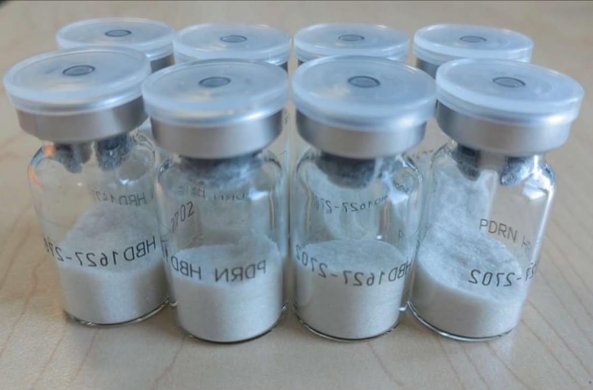
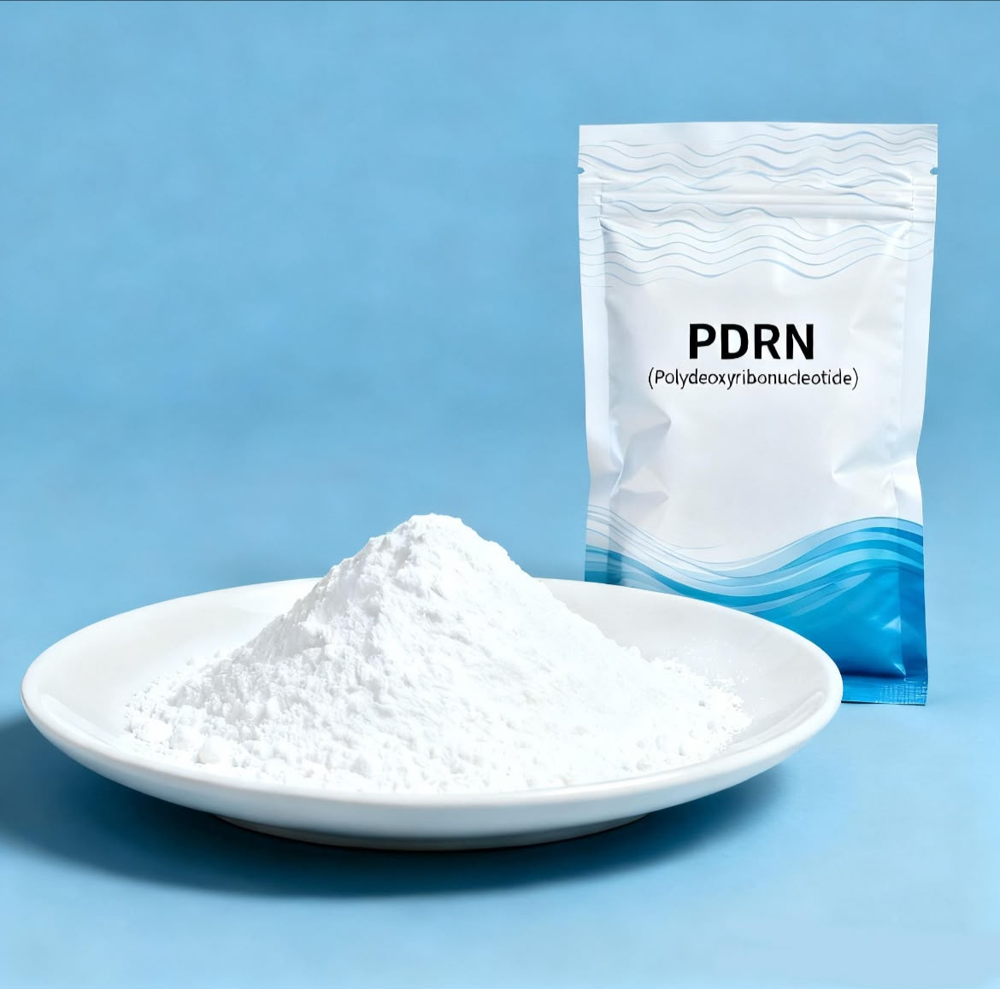

Meledak berkat popularitas klinik kecantikan Korea dan tren estetika berbasis regenerative medicine.
01 / ABOUT THE EXHIBITION
Trandlens 2026
kurasi eksklusif bahan aktif kosmetik masa kini
Katalog eksplorasi bahan aktif fungsional generasi terbaru yang memadukan performa tinggi dan stabilitas optimal untuk sediaan kosmetik masa kini.
 PROFILE
PROFILESTUDENT
CURATOR / STUDENT
Azzahra Nisa Barokhah
Universitas Bengkulu
Program Studi D3 Laboratorium Sains
02 / CHEMICAL INDEX
01
PDRN Salmon DNA
Polydeoxyribonucleotide
Memperbaiki sel kulit akibat sinar UV, memperkuat skin barrier, meratakan tekstur bopeng, dan memberi efek glass skin.
Niacinamide atau Cica (Centella Asiatica) untuk menenangkan sekaligus mempercepat pemulihan kulit.


FUN FACT / GONG
Ekstraksi PDRN murni yang sering digunakan dalam riset medis diambil dari cairan sperma ikan salmon, biasanya Oncorhynchus keta. Struktur DNA-nya mirip DNA sel darah putih manusia, sehingga dapat diterima tubuh tanpa penolakan imun signifikan.
02 / CHEMICAL INDEX
02
Copper
Tripeptide-1
Peptida Tembaga
Menjadi primadona baru karena memberikan hasil anti-aging setara dengan retinol, namun dengan tingkat iritasi yang nyaris nol. Sangat dicari pemilik kulit sensitif yang tidak cocok dengan retinoid.
Merangsang sintesis kolagen dan elastin baru, mempercepat pemulihan luka atau bekas jerawat kemerahan, serta mengencangkan kulit kendur.
Sangat bagus dipasangkan dengan Hyaluronic Acid dan Ceramides. Hindari Vitamin C murni konsentrasi tinggi atau AHA/BHA kuat dalam satu rutinitas.


FUN FACT / GONG
Cairan Copper Peptide murni memiliki warna biru alami yang mencolok. Serum biru neon atau kehijauan transparan tanpa pewarna buatan kemungkinan kaya peptida tembaga murni.
04 / CHEMICAL INDEX
03
Heartleaf
Extract
Houttuynia Cordata
Meledak global sejak 2023 berkat popularitas K-Beauty, terutama soothing toner dari Anua dan Abib, dan terus diminati hingga 2025–2026.
Meredakan peradangan jerawat, mengurangi kemerahan, mengontrol produksi sebum, serta menyegarkan dan menghidrasi kulit tanpa rasa lengket.
Sangat cocok dipadukan dengan Centella Asiatica atau Hyaluronic Acid untuk menenangkan kulit sekaligus mengembalikan hidrasi skin barrier.


FUN FACT / GONG
Daunnya berbentuk seperti hati, tetapi saat diremas mengeluarkan aroma khas seperti ikan. Kandungan quercetin di dalamnya bertindak sebagai agen anti-inflamasi alami untuk membantu meredakan kemerahan jerawat.
05 / CHEMICAL INDEX
04
Next-Gen
Peptides
Multi-Peptide Complexes
Popularitasnya menanjak sejak 2023–2024 bersama tren preventative aging Gen Z, lalu menjadi pilihan anti-aging tanpa iritasi pada 2025–2026.
Meningkatkan elastisitas dan kekencangan kulit, menyamarkan garis halus, memperbaiki jaringan rusak, serta memperkuat skin barrier.
Ideal dipadukan dengan Hyaluronic Acid, Niacinamide, atau Ceramides. Hindari Copper Peptides bersama Vitamin C murni konsentrasi tinggi.


FUN FACT / GONG
Peptida bekerja seperti kurir pesan bagi sel kulit. Zat ini memberi sinyal kepada fibroblast seolah kulit mengalami luka kecil, sehingga kolagen baru diproduksi untuk memperbaikinya.
06 / CHEMICAL INDEX
05
Snail
Mucin
Snail Secretion Filtrate
Menjadi fenomena global sejak era awal K-Beauty dan kembali viral masif di TikTok sepanjang 2023–2026 berkat essence ikonik.
Memberikan kelembapan intensif, mempercepat pemulihan tekstur kasar dan bekas jerawat, meratakan warna kulit, serta menenangkan kemerahan.
Sangat cocok dipadukan dengan Hyaluronic Acid untuk hidrasi berlapis, atau digunakan setelah AHA/BHA untuk menenangkan kulit.


FUN FACT / GONG
Lendir siput diproduksi sebagai perlindungan dari gesekan, bebatuan, dan sinar UV. Mekanisme regenerasi alaminya membuat Snail Mucin dikenal memiliki kemampuan super-healing saat diaplikasikan pada kulit.